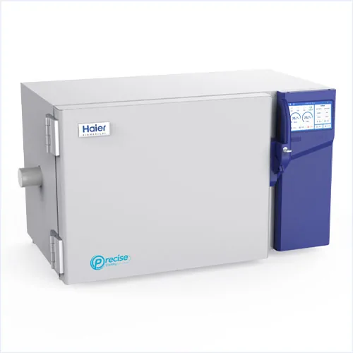
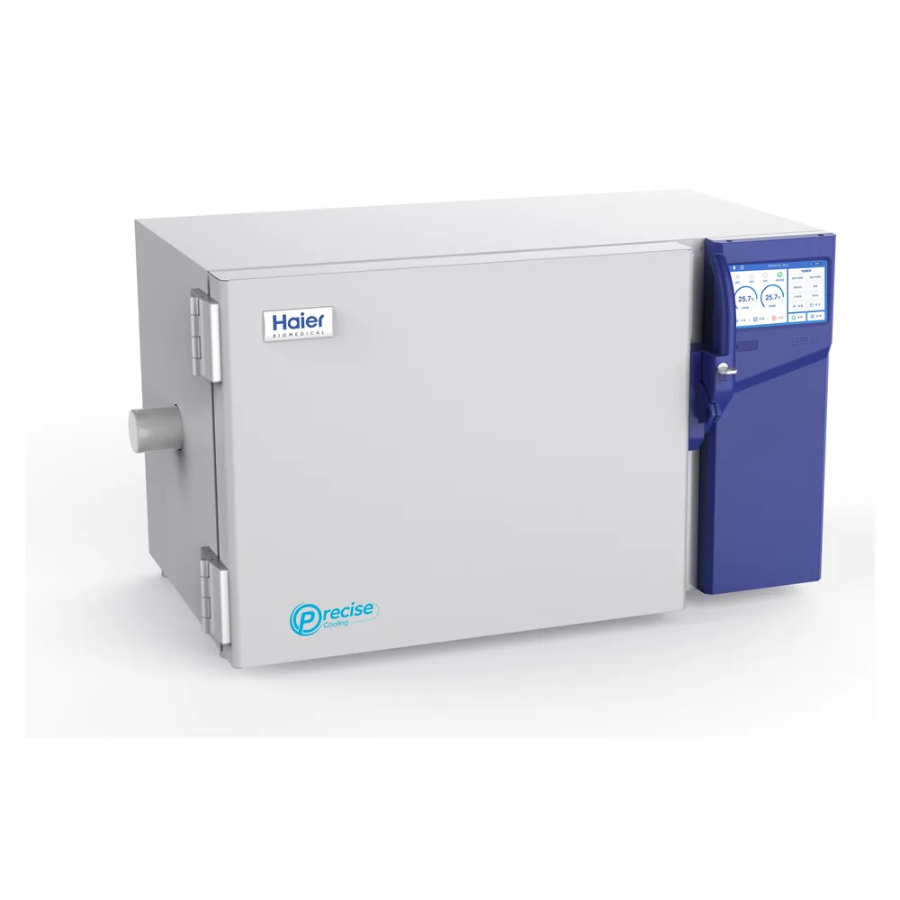
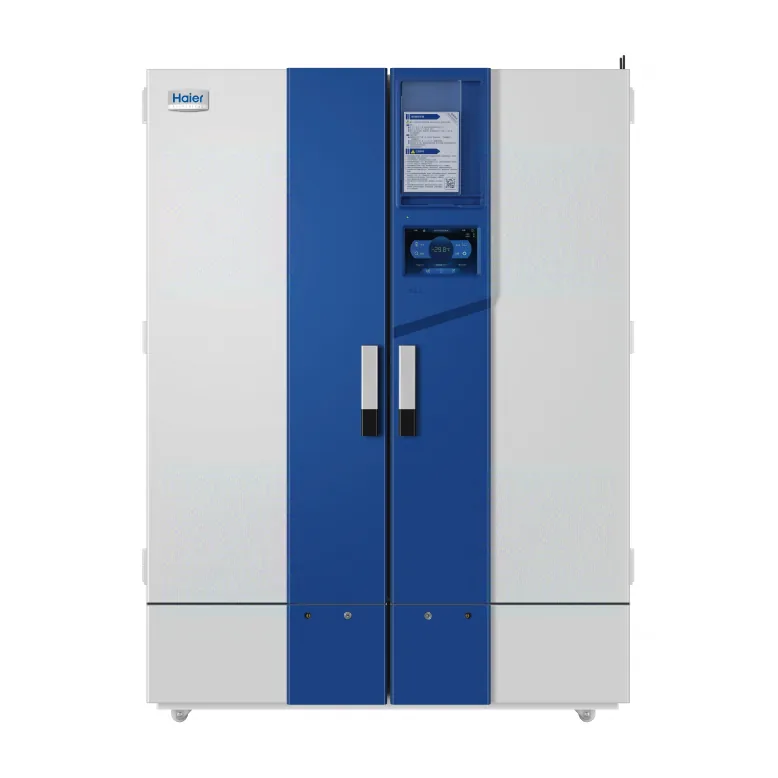
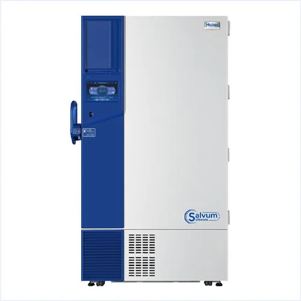
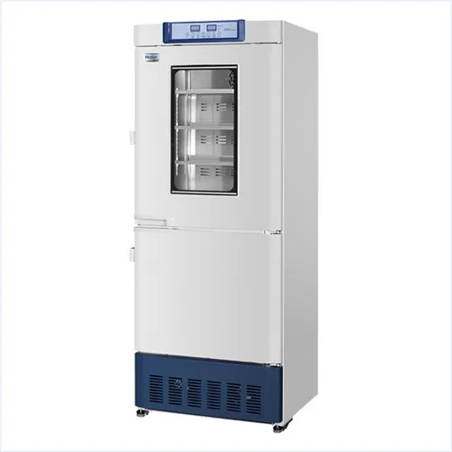
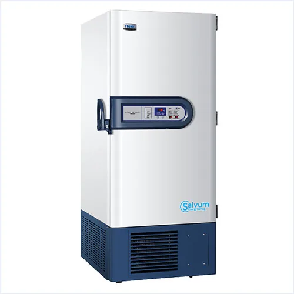

Protótipo para revisão interna.
Digite a senha para continuar.

Freezer de congelamento programável, de taxa controlada, para a criopreservação de células primárias e de outras amostras altamente sensíveis a variações de temperatura. Utiliza nitrogênio líquido para percorrer curvas de resfriamento precisas de -180 a +50 °C. Disponível nos modelos CJ-L19, CJ-L37 e CJ-L54 (19 a 54 L de volume útil).
Entre os recursos que se destacam: Controle preciso de temperatura; Congelamento com um clique; Rastreabilidade das informações; Tela touch de 7 polegadas.
Representado oficialmente pela Sotelab, com garantia de fábrica e assistência técnica própria e atendimento em todo o Brasil.
3 modelos disponíveis — compare as configurações e escolha o ideal para a largura da sua bancada e a demanda de exaustão.
| Modelo | Alimentação (V/Hz) | Volume útil (L) | Faixa de temperatura (°C) | Faixa de pressão do N₂ líquido | Dimensões externas (L×P×A) (mm) | Peso líquido (kg) |
|---|---|---|---|---|---|---|
| CJ-L19 | 220~50/60 | 19 | -180~50 | 0.15MPa±30% | 775*571*527 | 66 |
| CJ-L37 | 220~50/60 | 37 | -180~50 | 0.15MPa±30% | 941*571*527 | 73 |
| CJ-L54 | 220~50/60 | 54 | -180~50 | 0.15MPa±30% | 1093*571*527 | 84.5 |
← Arraste a tabela para o lado para ver todas as colunas →
Ficha técnica oficial do fabricante com todos os modelos, dimensões e especificações. Informe seus dados e receba o PDF na hora.
Nossa equipe técnica responde com proposta e disponibilidade em até 1 dia útil.





Ficha técnica oficial de Freezer de Congelamento Programável (Taxa Controlada) – Haier Biomedical. Informe seus dados e o download começa na hora.